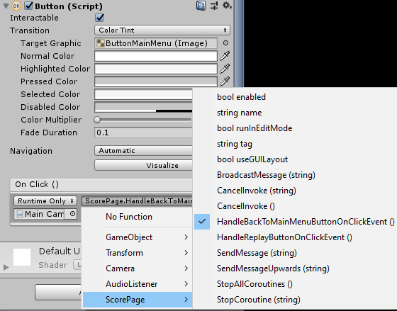

Menu & Scene Management¶
The game consists of 4 occasions in 3 scenes: the main menu, the gameplay scene, the score page after that and a pause scene which is contained in the gameplay scene. As usual, we start the implementation with an enum stating all the cases we are caring:
public enum MenuName {
MainMenu,
Gameplay,
ScorePage,
Pause
}
Then we create a central scene manager to manage the navigation through the menu system:
Main Menu¶
public static class MenuManager {
// Goes to the menu with the given name
public static void GoToMenu(MenuName name) {
switch (name) {
case MenuName.MainMenu:
// go to MainMenu scene
SceneManager.LoadScene("01_MainMenu");
break;
case MenuName.Gameplay:
// go to gameplay scene
SceneManager.LoadScene("02_GamePlay");
break;
case MenuName.ScorePage:
// go to score page
SceneManager.LoadScene("03_ScorePage");
break;
case MenuName.Pause:
// instantiate prefab
Object.Instantiate(Resources.Load("PauseMenu"));
break;
}
}
}
After that, we handle the detail functionalities in each scene. In the main menu scene, we have a button listening for the OnClick events for the main menu buttons:
public void HandlePlayButtonOnClickEvent() {
MenuManager.GoToMenu(MenuName.Gameplay);
}
In the scene, create the button gameobject and attache the function in the OnClick event inspector:
{kind=link}
Playbutton in Unity Hierarchy
{kind=link}
assigning the HandlePlayButtonOnClickEvent() functionality in the inspector
Score Page¶
The score page inherits score data from previous gameplay session. We first create a GameSession class to declare the static variables we are going to show in the score page:
public class GameSession : MonoBehaviour {
public static int ScoreResult;
public static int TimeResult;
public static int BuffCollectedResult;
public static int BuffMissedResult;
...
}
In order to let the GameSession object get inherited towards the score page, we have to utilise the DontDestroyOnLoad method. In addition, We should keep only one single GameSession object throughout the game, thus we need to detect and destroy extra GameSession object, we find the length of the list of GameSession objects, and if it’s bigger than 1, that means the current one is the second thus we destroy it. Otherwise, we maintain it towards the next session.
void Awake() {
// Find how many Game Status Objects are there
// Beware this time using plural FindObjectsOfType<>() because there might be multiple
int gameSessionsCount = FindObjectsOfType<GameSession>().Length;
// gameSessionsCount more than one means this is the second game session
if (gameSessionsCount > 1) {
// prevent the issues destroying action come in bit later then activating the game object
gameObject.SetActive(false);
Destroy(gameObject); // Destroy "yourself" referring to the current Game Status
} else {
DontDestroyOnLoad(gameObject); // Maintain "yourself" if this is the first Game Status
}
}
Don’t forget to destroy the current game status when restarting the game:
public void ResetGame() {
Destroy(gameObject);
}
In the Gameplay Scene, when one game session has ended, the HandleGameOverEvent handler function will be called to update the score data that will be passed on to the next scene.
private void HandleGameOverEvent(float unused) {
GameSession.ScoreResult = Score;
GameSession.TimeResult = (int) TotalPlayTime;
GameSession.BuffCollectedResult = BuffCollectedCount;
GameSession.BuffMissedResult = BuffMissedCount;
MenuManager.GoToMenu(MenuName.ScorePage);
}
In the score page, we assign the TextMeshProGUI object will be assigned and updated:
public class ScorePage : MonoBehaviour {
// ======================================================================
// Field Variables
// ======================================================================
[SerializeField] private TextMeshProUGUI _textMeshProScore2;
[SerializeField] private TextMeshProUGUI _textMeshTime;
[SerializeField] private TextMeshProUGUI _textMeshProBuffCollected;
[SerializeField] private TextMeshProUGUI _textMeshProBuffMissed;
// ==============================================================
// Main Loop & MonoBehaviour Methods
// ==============================================================
void Start() {
_textMeshProScore2.text = GameSession.ScoreResult.ToString();
_textMeshTime.text = GameSession.TimeResult.ToString();
_textMeshProBuffCollected.text = GameSession.BuffCollectedResult.ToString();
_textMeshProBuffMissed.text = GameSession.BuffMissedResult.ToString();
}
...
}
{kind=link}
TMP in Unity Hierarchy
Then we assign handler functions to button listening for the OnClick events for the score page in the inspector:
public void HandleReplayButtonOnClickEvent() {
DestroyGameSession();
MenuManager.GoToMenu(MenuName.Gameplay);
}
public void HandleBackToMainMenuButtonOnClickEvent() {
DestroyGameSession();
MenuManager.GoToMenu(MenuName.MainMenu);
}
| Replay the Game | Back to Main Menu |
|  |
Lastly, always remember to destroy the current game session when restarting the game to avoid conflicts in the next loop of game-flow.
private void DestroyGameSession() {
if (FindObjectOfType<GameSession>() != null) {
// destroy the current Game Session when restarting the game
FindObjectOfType<GameSession>().ResetGame();
}
}